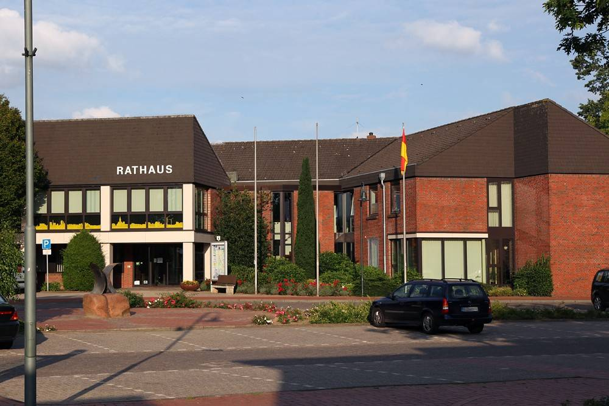

독일 담머 베르게 에너지협동조합, 2028년 말 해산 추진…지붕 임대 모델이 낡았다고 조합 밝혀

2008년 출범해 조합원 82명이 39만2,000유로 출자, 2018년 배당 10% 정점…해산 때 출자금에 지분 60~70% 추가 지급 계획
독일 니더작센주 담머 베르게 에너지협동조합의 이사회와 감사회가 2028년 말 협동조합을 '질서 있게 해산'하는 방안을 추진한다고 조합이 밝혔다. 최종 결정은 2027년 임시 조합원총회에서 내린다. 조합은 2008년 6월 창립회원 10명으로 출발해 담메시와 홀도르프가 내준 지붕에 태양광을 올렸고, 조합원 82명이 자기자본 39만2,000유로를 냈다. 한때 설비 용량은 약 1.3MW였으며 조합원은 정기적으로 6% 배당을 받다가 2018년에는 10%까지 받았다. 조합 이사 프랑크 마흐니크는 "지붕을 빌려 자체 설비를 운영하는 지금까지의 사업모델은 오늘 조건에서는 대체로 낡았다"고 해산 이유를 설명했고, 일부 설비는 이미 팔았다. 해산하면 조합원은 출자금을 돌려받고 현재 계획으로는 지분의 60~70%를 더 받는데, 조합은 전체 기간으로 평균 연 8%가 넘는 수익률이 될 수 있다고 밝혔다.
시민에너지 관점
10여 년간 6~10%의 배당을 낸 조합이 문을 닫는 것은 시민참여의 실패가 아니라 한 사업모델의 수명이 다했다는 신호로 읽어야 한다. 지붕 임대로 자체 설비를 굴리는 방식이 제도와 시장 변화에 밀렸다는 조합의 설명처럼, 한 가지 구조에만 묶인 조합은 환경이 바뀌면 출구를 찾아야 한다. 다만 이 내용은 조합 측 설명이어서, 평균 수익률 8% 같은 숫자는 조합원 정산이 끝난 뒤에야 확인된다. 국내 햇빛발전협동조합과 지자체도 설립 때부터 정관에 해산·승계 때 출자금 반환 방식과 수익 공개 기준을 넣어, 조합원이 출구까지 내다보고 참여하게 해야 한다.
출처: om-online.de(Wir von hier) 2026-11-09 기자 미표기(Martina Boeckermann, Volksbank Dammer Berge 작성 표기) 원문 보기
창간 전 시험 발행 기사입니다.
ドイツ・ダンマー・ベルゲ・エネルギー協同組合、2028年末の解散を推進…屋根賃借モデルは古くなったと組合
2008年に発足、組合員82人が39万2,000ユーロを出資、2018年に配当10%でピーク…解散時は出資金に加え持ち分の60～70%を上乗せ支給の計画
ドイツ・ニーダーザクセン州のダンマー・ベルゲ・エネルギー協同組合(Energiegenossenschaft Dammer Berge eG)の理事会と監査役会が、2028年末に協同組合を「秩序ある形で解散」する案を進めていると、組合が明らかにした。最終決定は2027年の臨時組合員総会で下す。組合は2008年6月に創立メンバー10人で発足し、ダンメ市とホルドルフが提供した屋根に太陽光パネルを載せ、組合員82人が自己資本39万2,000ユーロを拠出した。設備容量は一時約1.3MWに達し、組合員は定期的に6%の配当を受け取り、2018年には10%まで受け取った。組合理事のフランク・マフニク(Frank Machnik)氏は、屋根を借りて自前の設備を運営するこれまでの事業モデルは「今日の条件では大方古くなった」と解散の理由を説明しており、一部の設備はすでに売却した。解散すれば組合員は出資金を返還され、現在の計画では持ち分の60～70%を上乗せして受け取る。組合は、全期間を通じた平均で年8%を超える利回りになり得るとしている。
市民エネルギーの視点
10年余りにわたり6～10%の配当を出した組合が幕を下ろすのは、市民参加の失敗ではなく、一つの事業モデルが寿命を迎えた合図と読むべきだ。屋根賃借で自前設備を回す方式が制度や市場の変化に押されたという組合の説明のとおり、一つの構造に縛られた組合は、環境が変われば出口を探さなければならない。ただし、この内容は組合側の説明であり、平均利回り8%といった数字は、組合員への精算が終わってはじめて確認できる。国内の太陽光発電協同組合や自治体も、設立時から定款に、解散・承継時の出資金返還方法と収益公開の基準を盛り込み、組合員が出口まで見据えて参加できるようにすべきだ。
出典: om-online.de(Wir von hier) 2026-11-09 기자 미표기(Martina Boeckermann, Volksbank Dammer Berge 작성 표기) 原文を読む
創刊前の試験発行記事です。
德国达默贝尔格能源合作社拟于2028年底解散…合作社称出租屋顶的模式已经过时
2008年成立，82名社员出资39.2万欧元，2018年分红达到10%的峰值…解散时除返还出资外，计划再按持股额支付60%至70%
德国下萨克森州达默贝尔格能源合作社（Energiegenossenschaft Dammer Berge eG）表示，其理事会和监事会正推进在2028年底“有序解散”合作社的方案，最终决定将在2027年的临时社员大会上作出。合作社2008年6月以10名创始成员起步，在达梅市和霍尔多夫提供的屋顶上安装太阳能板，82名社员共缴纳自有资本39.2万欧元。设备容量一度约为1.3MW，社员定期获得6%的分红，2018年最高达到10%。合作社理事弗兰克·马赫尼克（Frank Machnik）解释解散原因时说：“租用屋顶并运营自有设备的既有商业模式，在今天的条件下已大体过时。”部分设备已经出售。解散后，社员将取回出资，按目前计划还可再获得持股额60%至70%的款项，合作社表示，就整个期间而言，平均年收益率可能超过8%。
市民能源视角
一个十多年来派发6%至10%分红的合作社关门，不应解读为公民参与的失败，而是一种商业模式走到寿命尽头的信号。正如合作社所说，靠出租屋顶运营自有设备的方式被制度和市场变化所挤压，被单一结构捆绑的合作社，一旦环境改变就得寻找出路。不过，这些内容是合作社方面的说明，平均收益率8%之类的数字，要等社员结算完毕后才能确认。韩国国内的太阳能发电合作社和地方政府也应从设立之初就在章程中写明解散、承接时返还出资的方式和收益公开标准，让社员在参与时就看到退出之路。
来源: om-online.de(Wir von hier) 2026-11-09 기자 미표기(Martina Boeckermann, Volksbank Dammer Berge 작성 표기) 查看原文
本文为创刊前试发行文章。
Germany's Dammer Berge Energy Cooperative Moves to Dissolve at End of 2028, Saying Its Roof-Leasing Model Is Outdated
Founded in 2008, 82 members put in 392,000 euros and dividends peaked at 10% in 2018; on dissolution the plan is to pay members a further 60% to 70% of their stake on top of their capital
The board and supervisory board of the Energiegenossenschaft Dammer Berge eG in Lower Saxony, Germany, are pursuing an "orderly dissolution" of the cooperative at the end of 2028, the cooperative said. The final decision will be taken at an extraordinary members' meeting in 2027. The cooperative began in June 2008 with 10 founding members, put solar panels on roofs provided by the town of Damme and by Holdorf, and 82 members contributed 392,000 euros in equity. Installed capacity once stood at about 1.3MW, and members regularly received a 6% dividend, rising to 10% in 2018. Board member Frank Machnik explained the reason for dissolving: "The business model so far, renting roof space and operating our own plants, is largely outdated under today's conditions." Some of the plants have already been sold. On dissolution, members get their capital back and, under the current plan, a further 60% to 70% of their stake; the cooperative says this could amount to an average annual return of more than 8% over the whole period.
Citizen Energy View
A cooperative that paid dividends of 6% to 10% for more than a decade closing its doors should be read not as a failure of citizen participation but as a sign that one business model has reached the end of its life. As the cooperative explains, running its own plants on leased roofs was overtaken by changes in rules and markets, and a cooperative tied to a single structure has to find an exit when conditions shift. This account, however, comes from the cooperative itself, and figures such as the 8% average return can only be verified once members have been settled. Korean solar cooperatives and municipalities, too, should write into their articles from the start how capital is returned on dissolution or succession and what standards apply for disclosing returns, so that members join with the exit in view.
Source: om-online.de(Wir von hier) 2026-11-09 기자 미표기(Martina Boeckermann, Volksbank Dammer Berge 작성 표기) Read the original
This article was published during the trial period before launch.